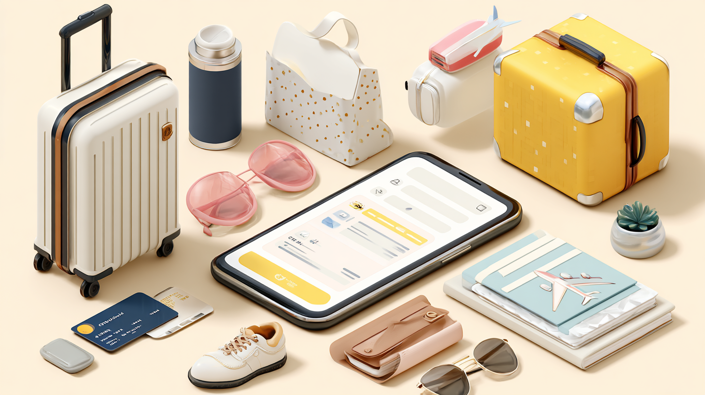

Use an AI shopping assistant to streamline pre-trip errands, pack smart, and prepare with less stress—your virtual assistant for efficient travel planning.
AI shopping assistant technology is changing the way travelers prepare for trips, simplifying the lengthy to-do lists that often come with travel planning. From picking up travel-sized toiletries to selecting the perfect luggage or weather-appropriate clothing, pre-trip tasks can quickly become overwhelming. That’s where an AI shopping assistant comes in—using intelligent technology to understand your travel needs, it helps streamline every step of your preparation, making the process more efficient and stress-free.
The days of scribbled shopping lists and forgotten items are gradually becoming a thing of the past. An AI shopping assistant offers a revolutionary approach to pre-trip organization by leveraging advanced algorithms to help you prepare more efficiently. These digital assistants can analyze your trip details—destination, duration, activities, and even weather forecasts—to generate comprehensive shopping lists tailored specifically to your journey.
When you’re preparing for a beach vacation in Thailand, your AI shopping assistant might recommend sunscreen, insect repellent, and lightweight clothing, while a skiing trip to Colorado would generate completely different recommendations. This level of personalization ensures you pack exactly what you need without overpacking or forgetting essential items.
The intelligence of an AI shopping assistant extends beyond simple list creation. These tools can schedule your shopping tasks based on priority, proximity, and pre-trip timeline. Need to pick up a new passport holder, visit the pharmacy for travel medications, and grab some new hiking shoes? Your virtual assistant for pre-trip planning can organize these errands in the most efficient route, saving you valuable time and reducing pre-travel stress.
As AI shopping technology continues to evolve, these assistants are becoming increasingly sophisticated in their ability to understand your preferences and anticipate your needs, making them invaluable companions for the modern traveler.
Travel planning has evolved dramatically over the years. What once required visits to travel agents, paper maps, and physical guidebooks has largely moved online. Now, we’re witnessing the next evolution with personal AI shopping assistants making preparation even more seamless.
Your personal AI shopping assistant functions as a learning system improving with each interaction. The more you use it, the better it understands your preferences, habits, and needs. Perhaps you always forget to pack sufficient socks, or you have specific brands you prefer for travel gear—an intelligent AI shopper will learn these patterns and make sure they’re accounted for in future trip preparations.
The transformative power of AI assisted shopping lies in its ability to anticipate needs based on your destination and activities. Planning a business trip? Your assistant might remind you to pack appropriate attire, business cards, and any technology needs. Heading for an adventure vacation? It will help ensure you have the right gear, appropriate clothing layers, and necessary safety items.
This level of personalization extends to brand preferences and budget considerations. If you’ve previously shown a preference for certain luggage brands or have set a specific budget for travel purchases, an advanced AI shopping assistant will respect these parameters when making recommendations, even finding the best deals and discounts for items on your list.
The integration of agentic AI technologies has further enhanced these capabilities, allowing your assistant to be more proactive and autonomous in helping manage your pre-trip tasks.
The practical applications of AI assisted shopping for travel preparation are numerous and continually expanding. Today’s shopping assistant AI tools offer features specifically designed to make your pre-trip errands more manageable.
One of the most valuable aspects is the way an AI shopping assistant helps prioritize tasks. Not all pre-trip purchases have the same urgency—some items might be needed weeks in advance (like special order clothing or travel documents), while others can be purchased closer to departure. Your digital assistant can create a timeline-based shopping schedule ensuring you take care of critical items first while distributing other tasks to prevent last-minute rushes.
Location-based recommendations represent another powerful feature. Your AI shopper can suggest where to find specific items, comparing prices across retailers and even integrating with mapping applications to create efficient shopping routes. Need specialty travel items? Your assistant can identify stores in your area carrying them or suggest online alternatives with delivery timeframes to work with your departure date.
Inventory management is yet another way AI shopping transforms travel preparation. Have a collection of travel gear already? Your assistant can maintain a digital inventory of what you own, preventing unnecessary purchases while highlighting what truly needs to be acquired for your upcoming trip.
For families or groups traveling together, a shared AI buying assistant can coordinate shopping responsibilities among multiple people, ensuring no duplications or oversights occur as different family members tackle portions of the pre-trip shopping list.
These practical applications demonstrate how applied AI solutions are creating tangible benefits for travelers who want to streamline their preparation process.

The technology behind AI shopping for travel is advancing rapidly, with exciting developments on the horizon. In the coming years, we can expect even more sophisticated AI shopper capabilities to further transform how we prepare for trips.
One emerging trend is the integration of augmented reality with AI shopping assistant technology. Imagine being able to virtually “try on” clothing or visualize how a piece of luggage would look and function before making a purchase. This technology will help travelers make more confident buying decisions for trip-related items.
Voice-activated shopping assistant AI features are also becoming more prevalent, allowing for hands-free list making and shopping assistance while you’re engaged in other pre-trip tasks. Simply telling your assistant, “I need hiking boots for my trip to Patagonia” could trigger a search for appropriate options based on your preferences and budget.
Predictive shopping represents another frontier. Advanced AI shopping systems may eventually be able to anticipate needs based on subtle changes in your calendar or communications. If you book a flight to a tropical destination, your AI shopping assistant might proactively generate a relevant shopping list without explicit instructions.
The integration between AI shopping assistant technology and travel platforms is also growing more seamless. Your assistant might soon be able to analyze your itinerary directly from airline and hotel confirmations, automatically generating appropriate shopping recommendations based on the specific activities and locations in your travel plans.
As these AI travel technologies continue to develop, the line between travel planning and shopping assistance will blur, creating a more cohesive preparation experience for travelers of all types.
The advantages of incorporating an AI shopping assistant into your travel preparation routine extend far beyond convenience. These digital assistants offer substantial benefits transforming the often stressful pre-trip period into a more manageable and even enjoyable experience.
Time savings rank among the most significant benefits. Research shows the average traveler spends between 10-20 hours preparing for a major trip, with a substantial portion dedicated to shopping and errands. An AI shopping assistant can reduce this time significantly by consolidating tasks, optimizing shopping routes, and eliminating the need to research every item individually. This efficiency allows you to focus on the exciting aspects of trip planning rather than logistical details.
Stress reduction is another crucial advantage. The virtual assistant for pre-trip planning handles the cognitive load of remembering what you need, when you need it, and where to get it. This mental offloading can dramatically decrease pre-trip anxiety, as you’ll have confidence all necessary items are accounted for.
Cost efficiency also improves with AI assisted shopping. Your assistant can compare prices across retailers, alert you to sales on items you need, and help prevent unnecessary or duplicate purchases. Many users report significant savings when using an AI shopping assistant to guide their travel preparations.
Perhaps most importantly, using a sophisticated AI shopper leads to better trip experiences. By ensuring you have exactly what you need—no more, no less—you’ll be better equipped to enjoy your travels without the frustrations of forgotten essentials or the burden of overpacked luggage.
The environmental impact should also be considered. When your personal AI shopping assistant helps you make more deliberate, targeted purchases, it reduces the likelihood of buying items you don’t need or won’t use beyond a single trip, contributing to more sustainable consumption patterns.
To get the most from your AI buying assistant when preparing for travel, consider these practical strategies to enhance the effectiveness of this technology.
Start early with your AI shopping assistant implementation. Ideally, begin the process at least 2-3 weeks before your departure date. This gives your assistant sufficient time to learn your preferences, research options, and create a staggered shopping schedule preventing last-minute stress.
Be specific about your trip details when setting up your assistant. The more information you provide about your destination, activities, accommodation type, and personal preferences, the more tailored your AI shopping recommendations will be. Include details about weather expectations, cultural considerations, and any special events you’ll be attending.
Take advantage of integration capabilities. Many AI shopping assistant platforms connect with your calendar, email, and other travel apps. Enabling these connections allows your assistant to automatically import itinerary information and create more accurate shopping recommendations.
Provide feedback consistently. When your AI shopper makes recommendations, take a moment to indicate which suggestions were helpful and which missed the mark. This feedback loop is essential for improving the system’s understanding of your needs and preferences.
Consider using your shopping assistant AI for post-trip inventory management as well. After returning, update your digital inventory with new items purchased and note any equipment or clothing which didn’t perform well. This information will be valuable for future trip planning.
Create templates for different trip types. If you frequently take business trips, weekend getaways, or family vacations, work with your AI shopping assistant to develop templates for each category. These templates can serve as starting points for future trips, making the preparation process even more efficient.
Don’t hesitate to ask for specialized advice. Beyond basic packing lists, your virtual assistant for pre-trip planning can often provide insights about destination-specific items you might not have considered, from appropriate power adapters to culturally sensitive clothing options.
By implementing these strategies, you’ll transform your AI shopping assistant from a helpful tool into an indispensable travel planning partner who consistently improves your pre-trip organization and overall travel experience.
The evolution of AI shopping technology has created unprecedented opportunities to streamline travel preparation. From personalized shopping lists and errand scheduling to predictive recommendations and budget optimization, these intelligent assistants are changing how we approach pre-trip tasks. As the technology continues to advance, we can expect even more seamless integration between travel planning and shopping assistance, further enhancing the traveler’s experience from the very first steps of preparation through the journey itself.
Whether you’re a frequent business traveler, an occasional vacationer, or an adventure seeker, incorporating an AI shopping assistant into your pre-trip routine can save time, reduce stress, and ensure you’re perfectly equipped for whatever experiences await at your destination.